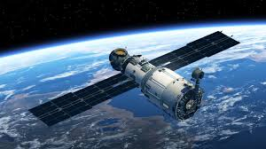

| Science |  |
| Satellite Technology | India's Contribution To Satellite Technology |
India's satellite technology contributions include the GSAT series of communication satellites and the Indian Regional Navigation Satellite System (NavIC), which is India's regional GPS system:
GSAT seriesThese satellites support services such as television broadcasting, telecommunication, and radio networking. The GSAT-11 satellite provides high data rate connectivity to the Indian mainland and islands.
NavICThis system provides positioning, navigation, and timing services for India. It's designed with a constellation of seven satellites and a network of ground stations. NavIC is used for applications such as:
Transportation
Location-based services
Personal mobility
Resource monitoring
Surveying and geodesy
Scientific research
Time dissemination and synchronization
Safety-of-life alert dissemination
NavIC and its features
NavIC was previously known as the Indian Regional Navigation Satellite System (IRNSS). The Indian government approved IRNSS in 2006 with a goal of providing a regional, GPS-like service.
India's weather satellites include: INSAT-3D Launched in 2013, this satellite is used for weather forecasting and disaster warning. It monitors the land and ocean, and provides environmental and storm warnings.
INSAT-3DS Launched in 2024, this satellite is a follow-up to INSAT-3D with improvements to mitigate issues with black-body calibration and midnight sun-intrusion. The Indian National Satellite System (INSAT) is a series of satellites launched by the Indian Space Research Organisation (ISRO) for meteorology, telecommunications, broadcasting, and search and rescue.
NAVIGATION SATELLITESIndia's satellite system that helps with navigation is the Navigation with Indian Constellation (NavIC), previously known as the Indian Regional Navigational Satellite System (IRNSS):
What it does--
NavIC provides real-time positioning and timing services. It covers India and the surrounding area of up to 1,500 km.
NavIC has many applications, including transportation, agriculture, disaster management, and national security.
DISASTER MANAGEMENT SATELLITESIndia has several satellites that help with disaster management, including:
EOS-08: Launched on August 16, 2024, this satellite is equipped with advanced payloads for monitoring natural hazards, disasters, and environmental changes. Its payloads include the Electro Optical Infrared Payload (EOIR) and the Global Navigation Satellite System Reflectometry (GNSS-R) payload.
IRS: The Indian Remote Sensing (IRS) program began in 1988 and uses satellites to monitor and manage natural resources and disasters. The IRS satellite can be used to predict, monitor, and manage disasters such as cyclones and earthquakes.